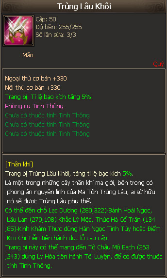
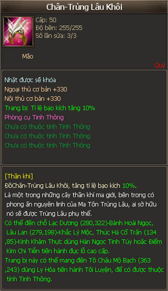

Trùng Lâu Khôi¶
Trùng Lâu Khôi & Chân Trùng Lâu Khôi
Tăng 5-10% xác suất đòn đánh chí mạng
Hình ảnh vật phẩm Trùng lâu Khôi, 100% tăng tỉ lệ bạo kích (đòn đánh chí mạng) thêm 5%
Hình ảnh vật phẩm Chân Trùng lâu Khôi, 100% tăng tỉ lệ bạo kích (đòn đánh chí mạng) thêm 10%
Như nhận xét riêng của cá nhân mình về Trùng Lâu Ngoa trước đây rằng nó cũng là vật phẩm đáng mua sau Trùng Lâu Đới và Trùng Lâu Liên, thì sự xuất hiện của Trùng Khôi làm lung lay vị trí của Trùng Ngoa, khiến cho việc sở hữu thêm Trùng Lâu có chút do dự và đáng cân nhắc hơn, có thể thấy Trùng Khôi nhỉnh hơn vì khả năng chắc chắn tăng xác suất đòn đánh chí mạng. Và có lẽ bộ đôi Trùng Lâu Khôi và Trùng Lâu Thủ sẽ giúp nhân vật sở hữu tăng sức mạnh theo cách thức ăn chắc mặc bền: chí mạng - sát thương tổng thể.
Ra mắt đầu tiên vào 10/2/2016 - Thiên Giáng Minh Châu thuộc chuỗi sự kiện tết 2016, dùng 666 Lưu Ly Trân Châu (666x1000 = 666k KNB) để đổi Trùng Khôi (không cố định) và 1616 Lưu Ly Trân Châu để đổi Chân Trùng Khôi.
Gần đây, Trùng Khôi lại tái xuất với giá trị quy đổi là 500 Lưu Ly Trân Châu (rất tiếc là cố định, nằm trong chuỗi sự kiện Vào Hạ - Thiên Giáng Minh Châu).
Giá thị trường: 20 triệu VNĐ
Nhân vật đầu tiên sở hữu Trùng Lâu Khôi là xNgạoThếx (Tên nhân vật trước đây: EmPhuong - BOSS Tiêu Dao - Máy chủ Giao Long 8 - Đại Thế Giới 2)


Boss Tiêu Dao Thiên Long Bát Bộ - xNgạoThếx sở hữu Trùng Lâu Khôi đầu tiên
Giá thị trường: 20m (Khôi)